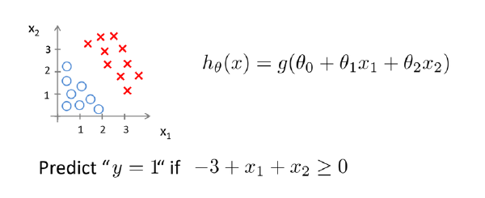
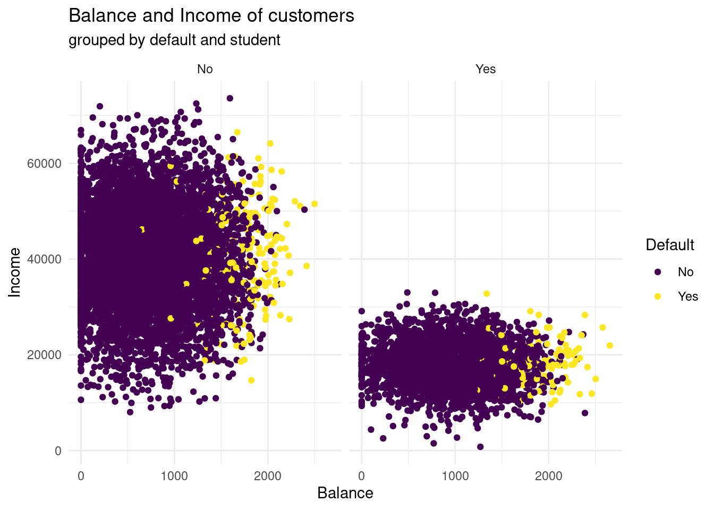
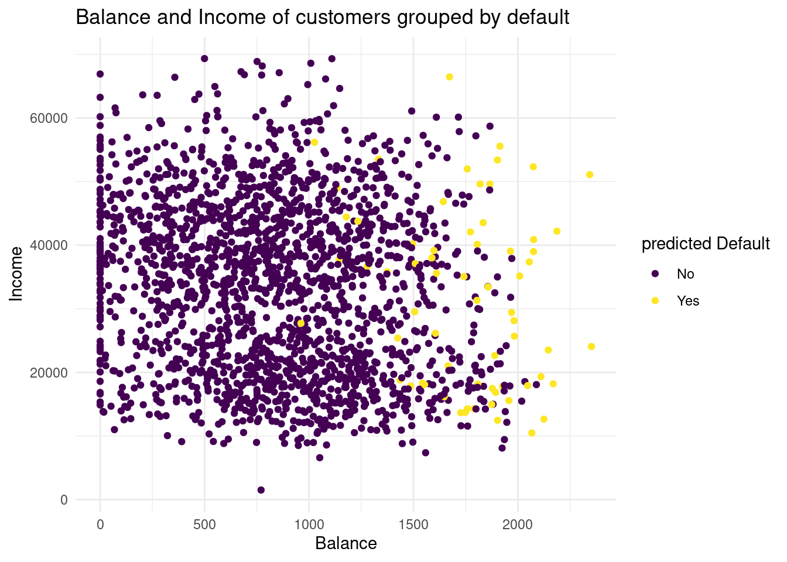
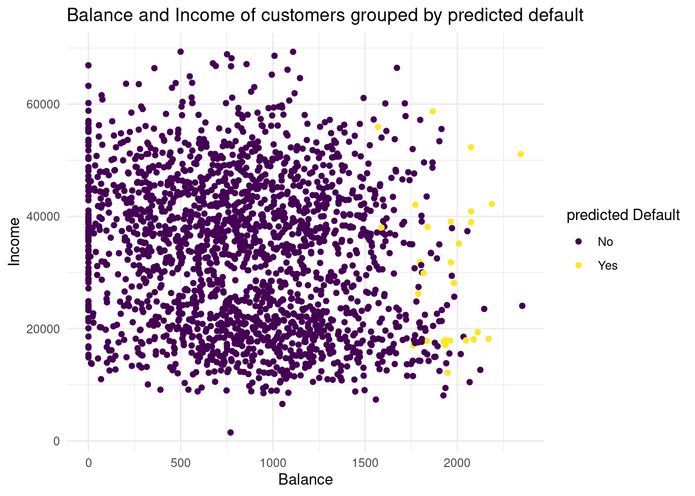
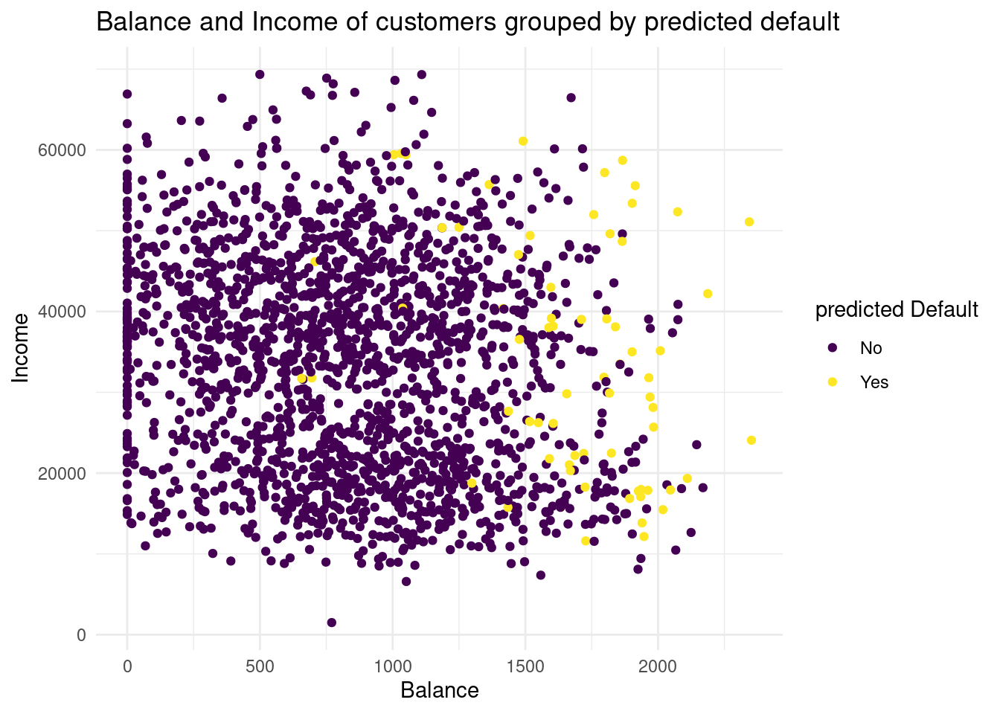
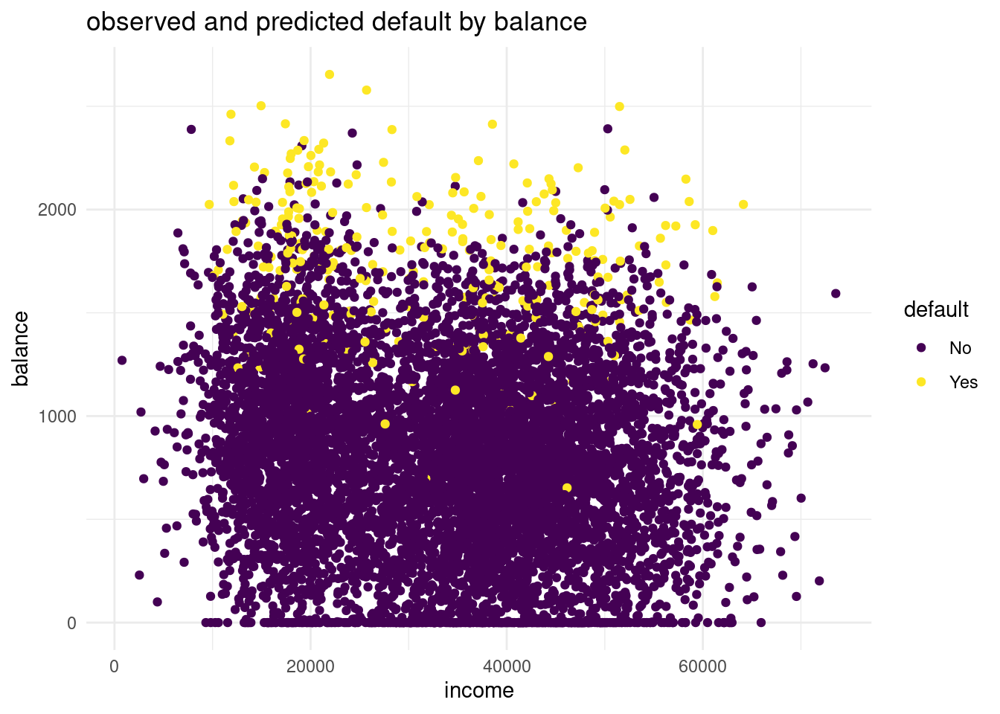
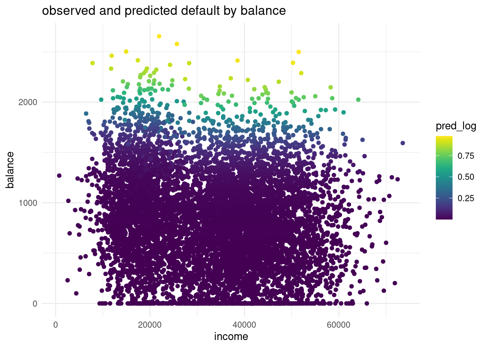
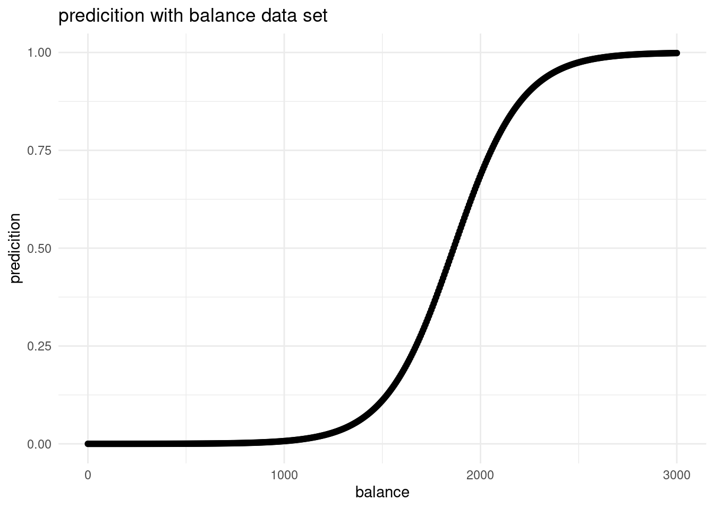

(exp(3.76 - (0.039*30))) / (1 + exp(3.76 + ((-0.039)*30)))[1] 0.9302152ISLR:
Supervised Learning two methods:
Parametric or non-parametric classifiers
Parametric model:
Non-parametric model:
Generative & Discriminative models
Generative:
Discriminative:
Generative classifiers try to model the data. Discriminative classifiers try to predict the label.
There is a lot! Here the most popular:
Which algorithm to choose: Generalization
How well does a learned model generalize from the data it was trained on to a new test set?
No free Lunch Theorem: Variance-Bias Trade Off → there is no optimal solution of analyzing data !
The model:
Given the memorized training data, and a new data point (test observation):
Tuning Parameter K
in R
#split the data set int train, validation, test
## create class predictions for different ks using the train data to learn the model and the test data to evaluate the parameters
library(class)
knn_5_pred <- knn(
train = default_train %>% select(-default),
test = default_valid %>% select(-default),
cl = as_factor(default_train$default),
k = 5
)Used to predict the probability that belongs to one of two categories (i.e., a binary outcome), for example:
Can be extended to model > 2 outcome categories: multinomial logistic regression (not treated in this course)
Other option to model > 2 outcome categories: Neural networks, naive Bayes, linear discriminant analysis (not treated in this course, but treated in ISLR)

\[ Want 0 \le H_\theta (x) \le 1 \]
\[ H_\theta (x) = \theta^T x \]
\[ H_\theta (x) = g(\theta^T x) \]
sigmoid function /logistic function:
\[ g(z) = \frac{1}{1 + e^-z} \]

Linear regression would predict impossible outcomes ( Pr (x) < 0 and > 1)
Assumption of normally distributed residuals heavily violated
To avoid this problem, we use a ‘trick’: we use a logistic `link function (logit)`
Advantage: all predicted probabilities are above 0 and below 1
so for the example below:
Default is category, the Y outcome
balance is X
e is Eulersche Zahl and in R with exp written
\[ Pr (Default = yes| balance) = \frac{e^{\beta_0 + \beta1 balance}}{ 1 + exp^{\beta_0 + \beta1 balance}} \]
left: normal linear regression with Default = yes (negative values!, not possible!)
right: logistic regression, all probabilities are positive!
\[ \frac{Pr(Y=1)}{Pr(Y=0)} = \frac{pi}{1-pi} = e^{\beta_0 + \beta_1X_1 + \dots} \]
used instead of probability → Es geht von der Idee der Chancen, der odds aus. Eine Möglichkeit, Wahrscheinlichkeiten anzugeben. Wie hoch ist die Chance, dass ein Ereignis eintritt gegenüber einem anderen?
Beispiel: Münzwurf, 1:1, 1 Chance ist Kopf, eine andere Chance ist Zahl
Beispiel 2: Würfeln einer 6, 1:5, eine Zahl 6 ist möglich, andere 5 Zahlen auch möglich
Hence, when using logistic regression, we are modelling the log of the odds. Odds are a way of quantifying the probability of an event E.
\[ odds(heads) = \frac{Pr(heads)}{Pr(tails)} = \frac{Pr(heads)}{1- Pr(heads)} = odds(heads) = \frac{0.5}{1-0.5} = 1 \]
Another example: game Lingo 44 balls, 26 are blue, 6 red and 2 are green
\[ odds(blue) =\frac{36} {6} = \frac{46/44} {8/44} = 4.5 \]
\[ ln(odds) = \beta_0 + \beta_1X_1 + \dots \]
So the linear part of the function models the log of the odds. With the log we have a model where X is linear.
maximum likelihood method:
for binaries, e. g. 1 = smoking, 0 = not smoking
approach: estimate \(\beta_0\) and \(\beta_1\) such that the probability \(\hat{p}(x_i)\) of an individual with \(Y=1\) corresponds as closely as possible to the observed \(Y=1\) for an individual.
logistic function:
\[ l(\beta_0, \beta_1) = \prod_{i:y_i=1} p(x_i) \prod_{i´: y_i´= 0} (1- p(xi´)) \]
Making Predictions:
\[ \hat{p}(X) = \frac{e^{\hat{\beta_0} + \hat{\beta_1X} +\hat{\beta_pX_p}}} {1 + e^{\hat{\beta_0} + \hat{\beta_1X}+\hat{\beta_pX_p}}} \]
Example: We have the following coefficients for a multiple logistic regression:
How can we compare different classes?
(exp(3.76 - (0.039*30))) / (1 + exp(3.76 + ((-0.039)*30)))[1] 0.9302152(exp(3.76 - (2.521*1) - (2.631*1) - (0.039*45))) / (1-exp(3.76 - (2.521*1) - (2.631*1)-(0.039*45)))[1] 0.0449112While a 30 year old female in first class has a probability of 93% survival rate, a 45 old male from 3rd class only have a 4 % rate.
\[ log(\frac{Pr(Y=k| X=x)}{Pr(Y=K| X=x)} ) = \beta_{k0} + \beta_{k1x1} + \beta_{kpxp} \]
log odds softmax coding function, which treat all K equally without baseline:
\[ Pr(Y = k | X = x) = \frac{e^{\beta_{k0} + \beta_{k1x1} +\beta_{kpxp}}} { \sum_{l=1}^K e^{\beta_{k0}+ \beta_{k1x1} +\beta_{kpxp}}} \]
## make a logistic regression using training data
library(glm)
lr_mod <- glm(default ~ ., family = binomial, data = default_train)
#get the coefficients
coefs <- coef(lr_mod)When applying classifiers, we have new options to evaluate how well a classifier is doing besides model fit:
p_ped <- predict(log_mod_titanic, type = "response")
with(titanic, table(p_ped > 0.5, Survived))
### Survived
### 0 1
### FALSE 372 91
### TRUE 71 222
or in this way:
conf_2NN <- table(predicted = knn_2_pred, true = default_valid$default)
conf_2NN
### true
### predicted No Yes
### No 1885 46
### Yes 48 20Error rate (ERR) is calculated as the number of all incorrect predictions divided by the total number of the dataset. The best error rate is 0.0, whereas the worst is 1.0.
\[ ERR = \frac{FP + FN}{P + N} \]
Accuracy (ACC) is calculated as the number of all correct predictions divided by the total number of the dataset. The best accuracy is 1.0, whereas the worst is 0.0. It can also be calculated by 1 – ERR \[
ACC = \frac{TP + TN}{P + N}
\] Error costs of positives and negatives are usually different. For instance, one wants to avoid false negatives more than false positives or vice versa. Other basic measures, such as sensitivity and specificity, are more informative than accuracy and error rate in such cases.
Sensitivity (SN) is calculated as the number of correct positive predictions divided by the total number of positives. It is also called recall (REC) or true positive rate (TPR). The best sensitivity is 1.0, whereas the worst is 0.0.
\[ SN = \frac{TP}{TP + FN} = \frac{TP}{P} \] Specificity (SP) is calculated as the number of correct negative predictions divided by the total number of negatives. It is also called true negative rate (TNR). The best specificity is 1.0, whereas the worst is 0.0. \[ SP = \frac{TN}{TN + FP} = \frac{TN}{N} \] Precision (PREC) is calculated as the number of correct positive predictions divided by the total number of positive predictions. It is also called positive predictive value (PPV). The best precision is 1.0, whereas the worst is 0.0.
\[ PREC = \frac{TP}{TP + FP} \]
False positive rate (FPR) is calculated as the number of incorrect positive predictions divided by the total number of negatives. The best false positive rate is 0.0 whereas the worst is 1.0. It can also be calculated as 1 – specificity.
\[ FPR = \frac{FP}{TN + FP} = 1 -SP \]
Threshold
A classifier with the random performance level always shows a straight line from the origin (0.0, 0.0) to the top right corner (1.0, 1.0). Two areas separated by this ROC curve indicates a simple estimation of the performance level. ROC curves in the area with the top left corner (0.0, 1.0) indicate good performance levels, whereas ROC curves in the other area with the bottom right corner (1.0, 0.0) indicate poor performance levels.
A classifier with the perfect performance level shows a combination of two straight lines – from the origin (0.0, 0.0) to the top left corner (0.0, 1.0) and further to the top right corner (1.0, 1.0). It is important to notice that classifiers with meaningful performance levels usually lie in the area between the random ROC curve (baseline) and the perfect ROC curve.
Comparison of multiple classifiers is usually straight-forward especially when no curves cross each other. Curves close to the perfect ROC curve have a better performance level than the ones closes to the baseline.
Another advantage of using the ROC plot is a single measure called the AUC (area under the ROC curve) score. As the name indicates, it is an area under the curve calculated in the ROC space. One of the easy ways to calculate the AUC score is using the trapezoidal rule, which is adding up all trapezoids under the curve. Although the theoretical range of AUC score is between 0 and 1, the actual scores of meaningful classifiers are greater than 0.5, which is the AUC score of a random classifier.
###Assignment
Due to ascension day, this lab will not be a guided lab, but a lab at home. Note that the content covered in this lab is (just like all other labs) exam material. In this lab at home, two different classification methods will be covered: K-nearest neighbours and logistic regression. Please send your knitted .html file with the completed lab to your lab teacher before next lecture (Tuesday May 31st 9AM) to be marked as ‘attended’ for this lab. Solutions to this lab will be posted on Tuesday May 31st on the course website, and will shortly be discussed during lab 6.
One of the packages we are going to use is class. For this, you will probably need to install.packages("class") before running the library() functions. In addition, you will again need the caret package to create a training and a validation split for the used dataset (note: to keep this at home lab compact, we will only use a training and validation split, and omit the test dataset to evaluate model fit). You can download the student zip including all needed files for practical 5 here.
library(MASS)
library(class)
library(caret)
library(ISLR)
library(tidyverse)
library(viridis)
library(ggthemes)This practical will be mainly based around the default dataset which contains credit card loan data for 10 000 people. With the goal being to classify credit card cases as yes or no based on whether they will default on their loan.
data("Default")
force(Default)
str(Default)4 Variables, part of the ISLR book!
Research subject: Credit card loan data Sample: 10.000 customers of a bank Predictor: - student - default - balance - income
predicted outcome: credit card case yes / no
Default dataset, where balance is mapped to the x position, income is mapped to the y position, and default is mapped to the colour. Can you see any interesting patterns already?Plot1<-ggplot(Default, aes(x= balance, y= income, color= default))+
geom_point()+
labs( x= "Balance",
y= "Income",
color = "Default",
title= "Balance and Income of customers grouped by default")+
scale_color_viridis(discrete= TRUE)+
theme_minimal()
Plot1First of all, no correlation between Balance and Income is obersable. That is really counterintuitive, because you would expect, with higher balance and higher income and vice versa. On explanation could be, that people that earn a lot of money are good in finance and invest their money in the stock market or in real estate and consequently do not have a higher balance. In my opinion, balance is the y variable and income the x variable, so I had mapped them the other way around. Because why should Balance influence the income? Do you get interest rates on your balances? What you can see further, is that customers with higher balance has often a default, whereas people with lower balance has less often a default.
facet_grid(cols = vars(student)) to the plot. What do you see?ggplot(Default, aes(x= balance, y= income, color= default))+
geom_point()+
labs( x= "Balance",
y= "Income",
color = "Default",
title= "Balance and Income of customers",
subtitle= "grouped by default and student")+
scale_color_viridis(discrete= TRUE)+
theme_minimal()+
facet_grid(cols= vars(student))
What you can see now, is that students have by far less income then not students. Here, no one has an income above 40.000, whereas in the not student group the only a few earn less than 10.000 and 40.000 ?$ seems like to be the centre span. Further, studens tend to have a higher balance, than non-students. Having a default look very similar distributed in both groups. In both groups, with higher balance more customers have a default.
ifelse() (0 = not a student, 1 = student). Then, randomly split the Default dataset into a training set default_train (80%) and a validation set default_valid (20%) using the createDataPartition() function of the caret package.If you haven’t used the function ifelse() before, please feel free to review it in Chapter 5 Control Flow (particular section 5.2.2) in Hadley Wickham’s Book Advanced R, this provides a concise overview of choice functions (if()) and vectorised if (ifelse()).
# dummy variable
levels(Default$student)[1] "No" "Yes"Default$student <- ifelse(Default$student == "Yes", 1,0)
# define the training partition ~ 80 percent
train_index <- createDataPartition(Default$default, p = .8,
list = FALSE,
times = 1)
# split the data using the training partition to obtain training data ~ 80 percent
default_train <- Default[train_index,]
# define the valid set ~ 20 percent
default_valid <- Default[-train_index,]Now that we have explored the dataset, we can start on the task of classification. We can imagine a credit card company wanting to predict whether a customer will default on the loan so they can take steps to prevent this from happening.
The first method we will be using is k-nearest neighbours (KNN). It classifies datapoints based on a majority vote of the k points closest to it. In R, the class package contains a knn() function to perform knn.
knn() function. Use student, balance, and income (but no basis functions of those variables) in the default_train dataset. Set k to 5. Store the predictions in a variable called knn_5_pred.Remember: make sure to review the knn() function through the help panel on the GUI or through typing “?knn” into the console. For further guidance on the knn() function, please see Section 4.6.5 in An introduction to Statistical Learning
?knn
#Select training set except the predicted
xtrain <- default_train [, -1 ]
#Select valid set except the predicted variables
yvalid <- default_valid[, -1]
# vector containing the class labels for the training observations
Ytrain <- default_train$default
# predict with knn
knn_5_pred <- class::knn(train =xtrain, test = yvalid, cl = Ytrain, k= 5)
table(knn_5_pred)knn_5_pred
No Yes
1971 28 default) mapped to the colour aesthetic, and one with the predicted class (knn_5_pred) mapped to the colour aesthetic. Hint: Add the predicted class knn_5_pred to the default_valid dataset before starting your ggplot() call of the second plot. What do you see?# Plot 1:
Plot1
Why use I the default valid data set in the second plot? I do not understand, why I must plot with the validation set now. Should I use the validation set as data in the former graph, too?+
→ default plot, because then we have the true class of default!
So here the former graph with only the validation data:
Plot1v <-ggplot(default_valid, aes(x= balance, y= income, color= default))+
geom_point()+
labs( x= "Balance",
y= "Income",
color = "predicted Default",
title= "Balance and Income of customers grouped by default")+
scale_color_viridis(discrete= TRUE)+
theme_minimal()
Plot1v
# combine data
default_valid2 <- cbind(default_valid, knn_5_pred)
# plot predicted values
Plot2<-ggplot(default_valid2, aes(x= balance, y= income, color= knn_5_pred))+
geom_point()+
labs( x= "Balance",
y= "Income",
color = "predicted Default",
title= "Balance and Income of customers grouped by predicted default")+
scale_color_viridis(discrete= TRUE)+
theme_minimal()
Plot2
If we compare the two distributions of the default groups in the validation data set, we see in the predicted default plot a more narrow distribution. In the second one, for the predicted subjects the balance is higher than as we observed. So with this method we have less variance, but much more bias. I would conclude, with this knn we could underfit the data.
knn_2_pred vector generated from a 2-nearest neighbours algorithm. Are there any differences?knn_2_pred <- class::knn(train =xtrain, test = yvalid, cl = Ytrain, k= 2)
table(knn_2_pred)knn_2_pred
No Yes
1931 68 During this we have manually tested two different values for K, this although useful in exploring your data. To know the optimal value for K, you should use cross validation.
# combine data
default_valid2 <- cbind(default_valid2, knn_2_pred)
# plot predicted values
Plot3<-ggplot(default_valid2, aes(x= balance, y= income, color= knn_2_pred))+
geom_point()+
labs( x= "Balance",
y= "Income",
color = "predicted Default",
title= "Balance and Income of customers grouped by predicted default")+
scale_color_viridis(discrete= TRUE)+
theme_minimal()
Plot3
In this case, we overfit the data, we have a lot more variance, but less bias. Neither 2 or 5 seems to be the best knn.
The confusion matrix is an insightful summary of the plots we have made and the correct and incorrect classifications therein. A confusion matrix can be made in R with the table() function by entering two factors:
conf_2NN <- table(predicted = knn_2_pred, true = default_valid$default)
view(conf_2NN)To learn more these, please see Section 4.4.3 in An Introduction to Statistical Learning, where it discusses Confusion Matrices in the context of another classification method Linear Discriminant Analysis (LDA).
If the confusion matrix would be perfect, we have no false positives and no false negatives. Why we are using again only the validation set? In the ISLR book the true default status of the training data set is used.
conf_true <- table(true_valid = default_valid$default, true_valid = default_valid$default)
conf_true true_valid
true_valid No Yes
No 1933 0
Yes 0 66conf_5NN <- table(predicted = knn_5_pred, true = default_valid$default)
view(conf_5NN)In the confusion matrix for the 2 KNN model there is a prediction for 49 customers to default, but they actually not did (false positives) and for 49 customers is the case the other way around (false negative). In the 5 Knn model the false positive is by far less, only 14 customers are predicted to would default but actually did not. The false negative rate is in the second model slightly higher.
Now the bank manager has to asked the following question: Is a slightly more negative rate more important for credit card loans or is a much higher false positive rate much more higher? I do not know, how much it costs a bank, giving credit cards to people, that default.
Assuming that model 5 is better, we test:
#specifity of both, true negative / all negative
spec2 <- 1884 / (1884 + 49)
spec5 <- 1919 / (1919 + 14)
spec5 > spec2[1] TRUE# sensivity of both, true positve / all positive
sn2 <- 17 / (17+ 49)
sn5 <- 14 / (14 +52)
sn5 > sn2[1] FALSE# accuracy TP + TN / P + N
acc2 <- (1884 + 17) / (1884 + 49 + 49 +17)
acc5 <- (1919 + 14) / (1919 + 14+ 52+14)
acc5 > acc2[1] TRUE# Precision TP / TP + FP
prec2 <- 17 / (17 + 49)
prec5 <- 14/ (14 + 14)
prec5 > prec2[1] TRUEKNN directly predicts the class of a new observation using a majority vote of the existing observations closest to it. In contrast to this, logistic regression predicts the log-odds of belonging to category 1. These log-odds can then be transformed to probabilities by performing an inverse logit transform:
\(p = \frac{1}{1 + e^{-\alpha}}\)
where \(\alpha\); indicates log-odds for being in class 1 and \(p\) is the probability.
Therefore, logistic regression is a probabilistic classifier as opposed to a direct classifier such as KNN: indirectly, it outputs a probability which can then be used in conjunction with a cutoff (usually 0.5) to classify new observations.
Logistic regression in R happens with the glm() function, which stands for generalized linear model. Here we have to indicate that the residuals are modeled not as a Gaussian (normal distribution), but as a binomial distribution.
glm() with argument family = binomial to fit a logistic regression model lr_mod to the default_train data.lr_mod <- glm(default ~ student + balance + income, data= default_train, family= binomial)
pred_log <- predict.glm(lr_mod, newdata = default_train, type= "response")Now we have generated a model, we can use the predict() method to output the estimated probabilities for each point in the training dataset. By default predict outputs the log-odds, but we can transform it back using the inverse logit function of before or setting the argument type = "response" within the predict function.
Is it right, that I used the default_train data as `new data’ argument ?
lr_mod. You can choose for yourself which type of visualisation you would like to make. Write down your interpretations along with your plot.logdata <- cbind(default_train, pred_log)ggplot(logdata, aes(x=income, y= balance, color= default))+
geom_point()+
labs(title = "observed and predicted default by balance",
x= "income",
y="balance")+
scale_color_viridis(discrete = TRUE)+
theme_minimal()
ggplot(logdata, aes(x=income, y= balance, color= pred_log))+
geom_point()+
labs(title = "observed and predicted default by balance",
x= "income",
y="balance")+
scale_color_viridis()+
theme_minimal()
The balance for the predicted default is way more higher than in the observations. In the predicted distribution no one with a default has a probable balance under 1500 $. While in the observed data in the validation set we can see a lot of observations that are lower than a 1500$. This is a sign for underfitting the data and for a too linear model.
Another advantage of logistic regression is that we get coefficients we can interpret.
lr_mod model and interpret the coefficient for balance. What would the probability of default be for a person who is not a student, has an income of 40000, and a balance of 3000 dollars at the end of each month? Is this what you expect based on the plots we’ve made before?options(scipen=999, digits=7)
summary(lr_mod)
Call:
glm(formula = default ~ student + balance + income, family = binomial,
data = default_train)
Coefficients:
Estimate Std. Error z value Pr(>|z|)
(Intercept) -10.634426784 0.536539293 -19.820 < 0.0000000000000002 ***
student -0.771838466 0.265548022 -2.907 0.00365 **
balance 0.005728527 0.000257862 22.215 < 0.0000000000000002 ***
income -0.000001169 0.000009179 -0.127 0.89868
---
Signif. codes: 0 '***' 0.001 '**' 0.01 '*' 0.05 '.' 0.1 ' ' 1
(Dispersion parameter for binomial family taken to be 1)
Null deviance: 2340.6 on 8000 degrees of freedom
Residual deviance: 1252.3 on 7997 degrees of freedom
AIC: 1260.3
Number of Fisher Scoring iterations: 8What would the probability of default be for a person who is not a student, has an income of 40000, and a balance of 3000 dollars at the end of each month? Is this what you expect based on the plots we’ve made before?__
(exp(-10.63 - (0.000001*40000) + (0.00573*3000))) /
(1 + exp(-10.63 - (0.000001*40000) + (0.00573*3000)))[1] 0.9985285Yes, I would expect this I look to the graphs before.
Let’s visualise the effect balance has on the predicted default probability.
balance_df with 3 columns and 500 rows: student always 0, balance ranging from 0 to 3000, and income always the mean income in the default_train dataset.student <- rep.int(0, 500)
balance <- seq(0, 3000, length.out = 500)
mean_income <-mean(default_train$income)
income <- rep(mean_income, 500)
balance_df <- data.frame(student, balance, income)
view(balance_df)newdata in a predict() call using lr_mod to output the predicted probabilities for different values of balance. Then create a plot with the balance_df$balance variable mapped to x and the predicted probabilities mapped to y. Is this in line with what you expect?# predict
pred_balance <- predict.glm(lr_mod, newdata = balance_df, type= "response")
balance_df <- cbind(balance_df, pred_balance)
#plot
plot_balance <- ggplot(balance_df, aes(x=balance, y= pred_balance))+
geom_point()+
labs(title = "predicition with balance data set",
x= "balance",
y="predicition")+
scale_color_viridis(discrete = TRUE)+
theme_minimal()
plot_balance 
It is what would be expected. If all the other predictors hold constant and we have only one equally distributed predictor, we have an S-shaped curve. That is because we have a categorical outcome variable. At one threshold, the probability of default changes.
pred_prob <- predict(lr_mod, newdata = default_valid, type = "response")
pred_lr <- factor(pred_prob > .5, labels = c("No", "Yes"))
conf_logreg <- table(predicted = pred_lr, true = default_valid$default)
conf_logreg true
predicted No Yes
No 1923 47
Yes 10 19spec_logreg <- conf_logreg[1,1] / (conf_logreg[1,1] + conf_logreg[2,1])
spec_logreg[1] 0.9948267sens_logreg <- conf_logreg[2,2] / (conf_logreg[2,2] + conf_logreg[1,2])
sens_logreg[1] 0.2878788acc_logreg <- (conf_logreg[1,1] + conf_logreg[2,2]) / sum(conf_logreg)
acc_logreg[1] 0.9714857prec_logreg <- conf_logreg[2,2] / (conf_logreg[2,2] + conf_logreg[2,1])
prec_logreg[1] 0.6551724Now we can very clearly see that logisitc regression performs a lot better compared to KNN, especially the increase in precision is impressive!
Now let’s do another - slightly less guided - round of KNN and/or logistic regression on a new dataset in order to predict the outcome for a specific case. We will use the Titanic dataset also discussed in the lecture. The data can be found in the /data folder of your project. Before creating a model, explore the data, for example by using summary().
library(readr)
titanic <- read.csv("data/Titanic.csv")
titanic <- as_tibble(titanic)
str(titanic)tibble [1,313 × 5] (S3: tbl_df/tbl/data.frame)
$ Name : chr [1:1313] "Allen, Miss Elisabeth Walton" "Allison, Miss Helen Loraine" "Allison, Mr Hudson Joshua Creighton" "Allison, Mrs Hudson JC (Bessie Waldo Daniels)" ...
$ PClass : chr [1:1313] "1st" "1st" "1st" "1st" ...
$ Age : num [1:1313] 29 2 30 25 0.92 47 63 39 58 71 ...
$ Sex : chr [1:1313] "female" "female" "male" "female" ...
$ Survived: int [1:1313] 1 0 0 0 1 1 1 0 1 0 ...# define the training partition ~ 80 percent
train_index <- createDataPartition(titanic$Survived, p = .8,
list = FALSE,
times = 1)
# split the data using the training partition to obtain training data ~ 80 percent
survived_train <- titanic[train_index,]
# define the valid set ~ 20 percent
survived_valid <- titanic[-train_index,]lr_tit <- glm(Survived ~ PClass + Age + Sex, data= survived_train, family= binomial)
summary(lr_tit)
Call:
glm(formula = Survived ~ PClass + Age + Sex, family = binomial,
data = survived_train)
Coefficients:
Estimate Std. Error z value Pr(>|z|)
(Intercept) 3.848086 0.451679 8.520 < 0.0000000000000002 ***
PClass2nd -1.478496 0.300063 -4.927 0.000000834 ***
PClass3rd -2.578366 0.313073 -8.236 < 0.0000000000000002 ***
Age -0.036480 0.008555 -4.264 0.000020048 ***
Sexmale -2.815392 0.233197 -12.073 < 0.0000000000000002 ***
---
Signif. codes: 0 '***' 0.001 '**' 0.01 '*' 0.05 '.' 0.1 ' ' 1
(Dispersion parameter for binomial family taken to be 1)
Null deviance: 811.17 on 598 degrees of freedom
Residual deviance: 527.37 on 594 degrees of freedom
(452 observations deleted due to missingness)
AIC: 537.37
Number of Fisher Scoring iterations: 5predict(lr_tit,
newdata = tibble(
PClass = c( "3rd", "2nd"),
Age = c( 14, 14),
Sex = c("male", "female")
),
type = "response"
) 1 2
0.1134086 0.8651658